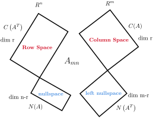

Skip to main content\(\newcommand{\N}{\mathbb N} \newcommand{\Z}{\mathbb Z} \newcommand{\Q}{\mathbb Q} \newcommand{\R}{\mathbb R}
\newcommand{\lt}{<}
\newcommand{\gt}{>}
\newcommand{\amp}{&}
\definecolor{fillinmathshade}{gray}{0.9}
\newcommand{\fillinmath}[1]{\mathchoice{\colorbox{fillinmathshade}{$\displaystyle \phantom{\,#1\,}$}}{\colorbox{fillinmathshade}{$\textstyle \phantom{\,#1\,}$}}{\colorbox{fillinmathshade}{$\scriptstyle \phantom{\,#1\,}$}}{\colorbox{fillinmathshade}{$\scriptscriptstyle\phantom{\,#1\,}$}}}
\)
Section 1.3 矩阵的四个基本子空间的总结
Subsection 1.3.1 矩阵的四个子空间的联系
矩阵的四个基本子空间可以表示为行空间\(C(A_{T})\)，零空间\(N(A)\)， 列空间\(C(A)\)，左零空间\(N(A_{T})\)。
Figure 1.3.1. 四个子空间
Subsection 1.3.2 四个子空间的性质
四个子空间有如下性质：
行空间与列空间的维数等于矩阵的秩r
零空间的维数等于空间维数减矩阵的秩n-r
左零空间的维数等于空间维数减矩阵的秩m-r
Subsection 1.3.3 正交补空间
Definition 1.3.2.
正交补空间(Orthogonal Complement)是指在一个内积空间中， 所有与给定子空间正交的向量所构成的子空间。具体来说，给定一个子空间\(W\)， 其正交补空间\(W^{⊥}\)，包含所有与\(W\)中的所有向量正交的向量。
行空间与零空间是一对正交补空间
列空间与左零空间是一对正交补空间
Subsection 1.3.4 \(Ax=b\)的解
在方程\(A_{m\times n}x_{n\times 1}=b_{m\times 1}\)中，\(x\)存在于n维空间中，矩阵A的行空间是n维空间的子空间： \(b\)存在于m维空间中，矩阵A的列空间也是m维空间的子空间，所以方程可以解读为将\(\mathbb{R}^{n}\)空间中 的一个向量通过矩阵A映射到\(\mathbb{R}^{m}\)空间，所以方程组有解的前提是\(b\)存在于矩阵的列空间中。
\(x\)存在于\(\mathbb{R}^{n}\)空间中，该空间由两个互为正交补空间的row space和null space组成， 所以可以将\(x\)分别投影到这两个空间上，即\(x=x_{r}+x_{n}\)。由零空间的定义可知，\(Ax_{r}=0\)。 也就是说，经过映射后，零空间部分的向量全部被映射到\(\mathbb{R}^{m}\)空间的零点。所以\(Ax=b\)的解由通解和 特解组成，通解即为\(Ax=0\)的解，特解即为\(Ax_{r}=b\)的一个解。解的情况如下表所示。
Table 1.3.3. \(Ax=b\)解的情况
| \(r=m,r=n\) |
矩阵是方阵且满秩 |
有唯一解 |
| \(r=m,r \lt n\) |
矩阵列满秩，左零空间是0维 |
有无穷多解 |
| \(r \lt m,r=n\) |
矩阵行满秩，零空间是0维 |
有唯一解或零解 |
| \(r \lt m,r \lt n\) |
矩阵不满秩 |
有零解或无穷多解 |